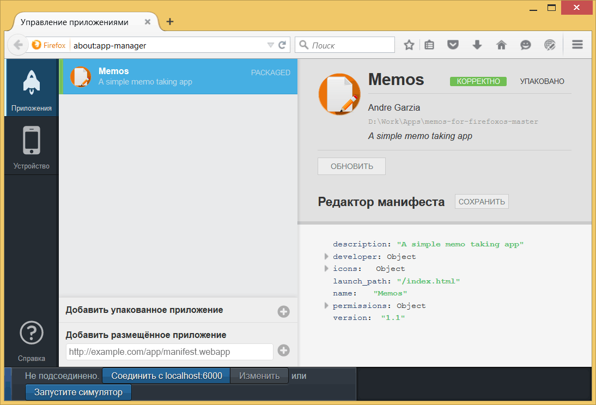
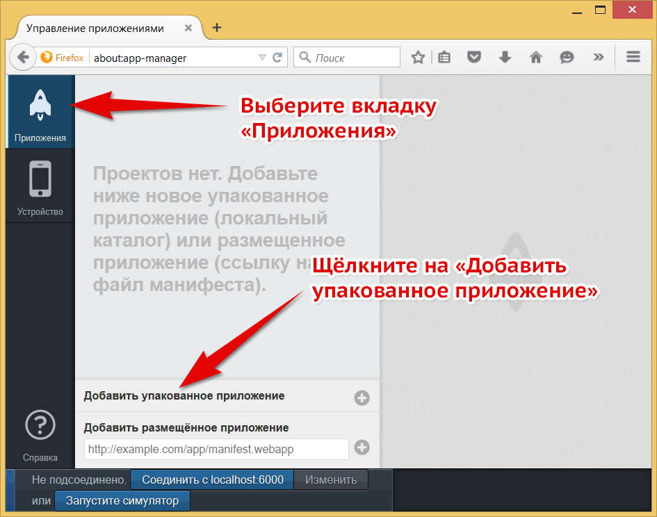
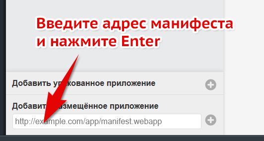
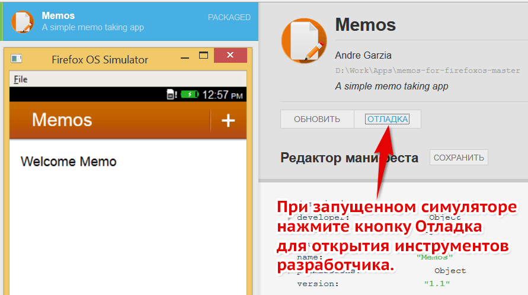
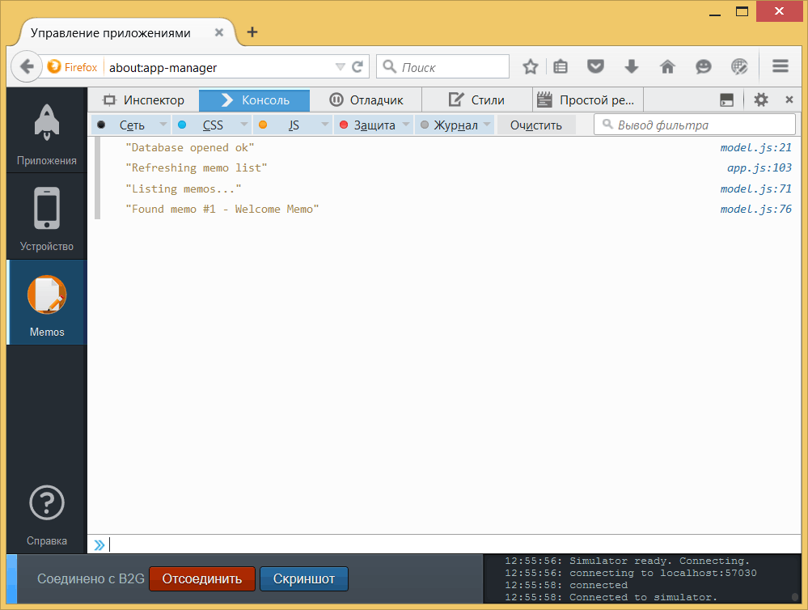

Менеджер приложений

Панель Firefox OS Simulator
Мы настроили симулятор в главе о подготовке окружения и использовали его в главе о построении нашего первого приложения. Теперь мы собираемся глубже заглянуть в особенности Менеджера приложений и узнать, как делать большинство задач.
Чтобы узнать об этом больше, посетите страницу Using the App Manager на MDN.
Помните, что если вы используете устройство на Firefox OS 1.1 или старше, то вам требуется расширение Firefox OS 1.1 Simulator, а не Менеджер приложений.
Добавление приложений
Вы можете добавить как размещённые, так и упакованные приложения в Менеджер. Давайте рассмотрим, как добавить каждый тип приложения.
Добавление упакованных приложений
Вы уже видели как добавить упакованные приложения в Менеджер в процессе создания нашего первого приложения, повторим теперь это ещё раз, чтобы я мог показать вам о других возможностях.
Чтобы добавить новое упакованное приложение нажмите на кнопку Добавить упакованное приложение в панели Менеджера, как показано на скриншоте ниже.

Добавление упакованного приложения в Менеджере приложений
Когда вы щёлкаете по кнопке выделенной на изображении, Firefox открывает диалоговое окно выбора файла. Вы должны сделать обзор жёсткого диска и выбрать папку, содержащую файл манифеста для приложения, которое вы хотите добавить в Менеджер приложений. Если нет никаких проблем с вашим манифестом, то приложение будет добавлено в список на экране.
Добавление размещённых приложений
Если вы создаёте размещённое приложение, то должны протестировать его с помощью веб-сервера. Не пытайтесь использовать описанный выше метод для размещённых приложений, потому что можете пропустить некоторые ошибки, которые произойдут только в серверной среде — например, манифест окажется неверного MIME-типа. Обратите внимание, что симулятор не предупреждает о неправильных MIME-типах, но такие вещи важны, если вы отправляете приложение в Mozilla Marketplace.
Большинство размещённых приложений не являются программами, сделанными исключительно для Firefox OS, но сайты на основе адаптивного дизайна способны приспосабливаться к различных устройствам и разрешениям. Такие веб-приложения, как правило, имеют сложную серверную часть требуемую для работы приложения, и именно поэтому вы должны проверить приложение с помощью реального веб-сервера.
Чтобы запустить приложение в симуляторе, впишите адрес вашего приложения в поле ввода и нажмите кнопку Добавить размещённое приложение.

Добавление размещённого приложения в Менеджере приложений
После нажатия на кнопку манифест проверяется и если он корректный, приложение будет добавлено в Менеджер приложений.
Запуск приложения
Чтобы запустить приложение нажмите кнопку Запустите симулятор. После этого вы сможете выбрать, какой из установленных симуляторов вы хотите запустить.
Если симулятор уже работает, то вы можете нажать кнопку Обновить внутри описания приложения и установить приложение на запущенный симулятор.
Иконка приложения появится на домашнем экране симулятора после завершения установки. Вы можете просто щёлкнуть по ней для запуска.
Обновление приложения
Каждый раз, когда вы изменяете некоторые файлы и хотите проверить работу приложения, вам нужно нажать на кнопку Обновить для обновления приложения на работающем симуляторе.
Отладка
После того, как приложение добавлено в запущенный симулятор, доступна его отладка при нажатии кнопки Отладка в списке приложений. Это запустит ваше приложение в симуляторе и откроет консоль JavaScript связанную с вашим приложением.

Какую кнопку нажать
После нажатия на эту кнопку вы увидите подобный экран

Инструменты разработчика связанные с приложением, запущенным на симуляторе
С помощью инструментов связанных с вашим приложением вы можете тестировать JavaScript, делать отладку DOM, редактировать стили и др. Крутите ваше приложение, пока оно не станет хорошим.
После того, как ваше приложение показало прекрасную работу в симуляторе, настало время проверить его на реальном устройстве.
Проверка приложений на реальном устройстве
Ничто не заменит проверку на реальном устройстве. На симуляторе вы тестируете с помощью мыши и щёлкаете на экране компьютера, в то время как на реальном устройстве используете пальцы на сенсорном экране и физические кнопки. Это сильное различие между пользователем и разработчиком.
В качестве примера того, почему данный тип проверки важен, позвольте рассказать вам небольшую историю. Несколько лет назад Рафаэль Экхард (дизайнер, который создал обложку для этой книги) и я делали игру-головоломку похожую на Bejeweled. Наша игра использовала перетаскивание разных штук на игровой доске и прекрасно работала на симуляторе.
Когда мы затем протестировали игру на реальном телефоне, то поняли, что наши компоненты игры не приспособлены под пальцы. Когда рука оказывалась над экраном, то доска закрывалась рукой. Хуже того, фишки, которые пользователь должен был перетаскивать, были меньше подушечки пальца, так что пользователь не мог видеть что происходит. В целом, опыт взаимодействия был очень плох. Это произошло потому, что все испытания мы проводили только на симуляторе с помощью мыши с крошечным курсором. Когда мы решили попробовать с пальцем, который шире чем курсор, то поняли что нам нужно переработать наш интерфейс.
Чтобы избежать подобного печального опыта, всегда проверяйте на реальном устройстве... или двух или больше, если сможете получить в свои руки несколько устройств. Проверяйте часто на простых прототипах. В противном случае, вы можете потратить драгоценное время и деньги и придётся заново создавать ресурсы.
Подключение к устройству на Firefox OS
Если у вас есть устройство на Firefox OS (и установлены все необходимые драйверы), то можете отправлять приложения непосредственно из Менеджера приложений на устройство, подключенное к компьютеру. Когда Менеджер приложений обнаружит, что вы подключили телефон на Firefox OS, то отобразит идентификатор телефона рядом с кнопкой Запустить симулятор.
Если вы нажмёте на эту кнопку, то телефон запросит разрешение на установку подключения для отладки, его надо разрешить. Как только подключение установлено, вы сможете использовать кнопки Обновить и Отладка для установки и отладки приложения на подключенном устройстве, как вы делали в запущенном симуляторе.
Резюме
В целом, Менеджер приложений потрясающий. Он гораздо лучше, чем старое расширение Firefox OS 1.1 Simulator, поскольку имеет лучшие инструменты для разработчиков и может работать с несколькими версиями Firefox OS. Мы предполагаем, что Менеджер приложений станет все лучше и лучше, будет включать встроенный редактор манифеста и др.
В следующей главе мы поговорим о дистрибуции вашего приложения.

Все материалы сайта доступны по лицензии Creative Commons «Attribution-NonCommercial» («Атрибуция — Некоммерческое использование») 4.0 Всемирная, если не указано иное.